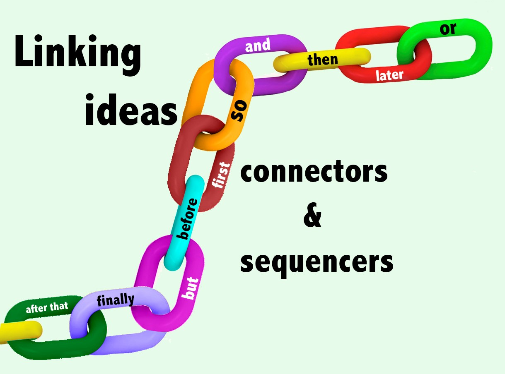
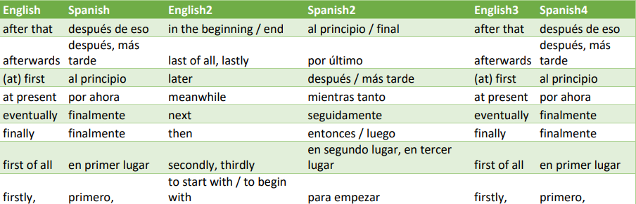
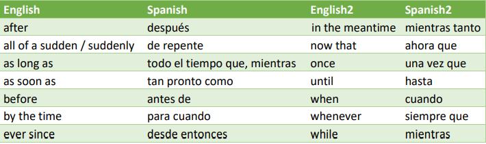

SEQUENCERS AND CONECTORS
Los secuenciadores de tiempo y los conectores son herramientas gramaticales que se usan para unir oraciones y frases.
Los times sequencers son los que nos permiten saber el orden en que ocurren los hechos, son expresiones de secuencia: after that, then , when.
Connectors son expresiones que sirven para unir diferentes partes del texto y dar un encadenamiento lógico de las ideas.

A la hora de contar una historia, es muy útil hacerlo en orden cronológico, empezando por el
principio, siguiendo con el desarrollo de los eventos y finalizando con el resultado o desenlace
de la historia. Para ayudarnos a organizar las ideas dentro de la historia disponemos de los
llamados nexos o conectores de secuencia.
Los conectores de secuencia y tiempo nos ayudan a organizar y a ordenar cronológicamente los hechos y sucesos en una narración. Tenemos los siguientes:
Ejemplos
Los conectores de secuencia y tiempo nos ayudan a organizar y a ordenar cronológicamente los hechos y sucesos en una narración. Tenemos los siguientes:

Ejemplos
We ran all the way back to the beach. Afterwards, we were very tired.
Corrimos todo el camino de regreso a la playa. Después, estábamos muy cansados.
To begin with, we went to the cinema. Then, we had dinner. Para empezar, fuimos al cine. Después, cenamos.
Ejemplos
To begin with, we went to the cinema. Then, we had dinner. Para empezar, fuimos al cine. Después, cenamos.

Ejemplos